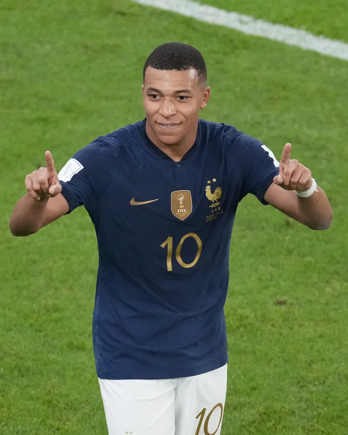

Which Football Icon Reflects You?
Football legends are more than just athletes — they are expressions of creativity, power, resilience, and genius. Explore these archetypes to find out which football icon aligns with your inner game. Each personality is built around signature traits, strengths, and legendary moments. Who are you on the pitch?

Pep Guardiola – The Tactical Genius
Every pass has a purpose.
You think three moves ahead. Like Pep’s legendary PepTalks at Barça and Man City (2008–2025+), you break down complex strategies into simple patterns.
You thrive on video analysis, precision drills, and mastering positional rotations.
- Career highlights: 3× Champions League winner, 10× domestic league titles, Player-turned-manager icon.
- Best match traits: Game intelligence, spatial awareness, pattern recognition.
- Quiz tip: If you love analyzing heat-maps and set-piece routines, you’re the Tactician.
- Quote: “To control the game is to control time.”

Cristiano Ronaldo – The Relentless Machine
Work. Win. Repeat.
You push past limits with morning sprints, gym sessions, and perfecting your free-kick curve. From Sporting CP to Real Madrid, Juventus, United & Al-Nassr, you chase records.
Every goal, every sprint, every celebration fuels your relentless drive.
- Career highlights: 5× Ballon d’Or, all-time top UEFA Champions League scorer, 800+ career goals.
- Best match traits: Explosive power, clinical finishing, elite work ethic.
- Quiz tip: If you map your week around HIIT workouts and goal-scoring drills, you’re the Machine.
- Quote: “Your love makes me strong. Your hate makes me unstoppable.”

Lionel Messi – The Silent Maestro
Let the ball do the talking.
You let skill speak louder than words. Silent in interviews but loud on the pitch with dribbles that defy physics.
With Barcelona’s La Masia roots, a record 91 goals in 2012, and World Cup glory in 2022, your magic is consistent artistry.
- Career highlights: 7× Ballon d’Or, World Cup 2022 champion, 700+ career goals.
- Best match traits: Close control, low-center dribbling, vision for killer passes.
- Quiz tip: If you spend hours perfecting no-look passes and tiny touch drills, you’re the Maestro.
- Quote: “You have to fight to reach your dream. You have to sacrifice and work hard for it.”

Gennaro Gattuso – The Warrior
Fierce. Unyielding. Passionate.
You channel pure grit and heart. Like Gattuso’s tackling demons at AC Milan, your energy fuels your entire team.
No tactic too dirty, no challenge too tough—you thrive in the trenches of midfield battles.
- Career highlights: UEFA Champions League winner, Italy 2006 World Cup champion, midfield enforcer legend.
- Best match traits: Aggressive pressing, fearless tackling, motivational leadership.
- Quiz tip: If you prefer endurance runs and one-on-one duels over fancy footwork, you’re the Warrior.
- Quote: “Heart over talent every day.”

Ronaldinho – The Magician
Creativity Unleashed.
You live for the unthinkable flick, the audacious elastico, the crowd-stopping no-look pass.
Whether in Copa Libertadores or La Liga, your instinct for improvisation mesmerizes defenders and delights fans.
- Career highlights: 2005 FIFA World Player of the Year, Champions League 2006 winner, samba-style icon.
- Best match traits: Flair, unpredictability, pure joy in motion.
- Quiz tip: If your idea of training is juggling a ball for hours, you’re the Magician.
- Quote: “Play with joy and the rest follows.”
N'Golo Kanté – The Stoic Maestro
Consistency & Humility.
You dominate without drama. From Caen to Leicester’s fairy-tale title, to Chelsea’s Champions League win, your engine never stops.
Quiet in the media, loud in tackles—your selflessness anchors every unit.
- Career highlights: 2× Premier League winner, 2018 World Cup champion, midfield workhorse.
- Best match traits: Interceptions, stamina, unshakeable positioning.
- Quiz tip: If you bail teammates out with key tackles and never seek the limelight, you’re the Stoic Maestro.
- Quote: “Let my work speak.”

Gianluigi Buffon – The Wall
Last Line of Defense.
You inspire confidence in chaos. Like Buffon’s penalty-save artistry at Juventus and PSG, your reflexes and commanding presence make you the ultimate guardian.
Age only deepens your influence.
- Career highlights: 2006 World Cup winner, 10× Serie A titles, all-time most capped Italian player.
- Best match traits: Shot-stopping, aerial command, vocal organization.
- Quiz tip: If your pre-match ritual includes visualizing saves and practicing reflex drills, you’re the Wall.
- Quote: “Fearless between the posts.”

Kylian Mbappé – The Rocket
Speed Meets Skill.
You accelerate past defenders with world-record sprints, then finish clinically. From Monaco breakout to PSG stardom and World Cup 2018 heroics, your pace and composure define modern forward play.
- Career highlights: 2018 World Cup winner (youngest since Pelé), multiple Ligue 1 top scorer, PSG talisman.
- Best match traits: Acceleration, composure under pressure, off-ball movement.
- Quiz tip: If you track your 0–100 km/h times and practice timed finishing drills, you’re the Rocket.
- Quote: “Explode at the moment.”
Didier Drogba – The Clutch Performer
Big Moments, Big Impact.
You rise when stakes are highest. Drogba’s 2012 Champions League final heroics epitomize your mindset. In crucial matches, you deliver headers, penalties, and leadership when it matters most.
- Career highlights: Chelsea legend, 2012 Champions League winner, Ivory Coast icon.
- Best match traits: Aerial dominance, physical strength, mental steel.
- Quiz tip: If you thrive under pressure and practice decisive finishing drills, you’re the Clutch Performer.
- Quote: “Rise when the world needs you.”

Sergio Busquets – The Controller
Midfield Metronome.
You dictate rhythm with simple touches. Busquets’ PIR (Positioning, Intelligence, Reading the game) at Barça and Spain’s 2010 World Cup run mirrors your cool, precise style—always one step ahead.
- Career highlights: 3× Champions League winner, 2010 World Cup champion, Barça’s ‘invisible engine.’
- Best match traits: Ball retention, game-reading, timing of interceptions.
- Quiz tip: If you study pass networks and focus on tempo control drills, you’re the Controller.
- Quote: “Control the game, control the result.”

Philipp Lahm – The Mentor
Wisdom & Leadership.
You guide with calm authority. Lahm’s versatility from full-back to midfield helped Bayern and Germany win everything—2014 World Cup, multiple Bundesliga titles. You lead by example, on and off the ball.
- Career highlights: 2014 World Cup winner & captain, 8× Bundesliga champion, tactical utility player.
- Best match traits: Versatility, positional intelligence, emotional intelligence.
- Quiz tip: If you mentor teammates in training and adapt to multiple positions, you’re the Mentor.
- Quote: “Lead by example every day.”

Jamie Vardy – The Joker
Wildcard Entertainer.
You thrive on unpredictability. Vardy’s record-breaking Leicester title run (2015–16) and lightning-fast counter-attacks capture your flair for surprise finishes and guerilla-style pace bursts.
- Career highlights: Premier League winner with Leicester, record 11-game goal streak.
- Best match traits: Explosive bursts, direct runs, poacher’s instinct.
- Quiz tip: If you practice reaction-time drills and love catching defenders off-guard, you’re the Joker.
- Quote: “Expect the unexpected.”